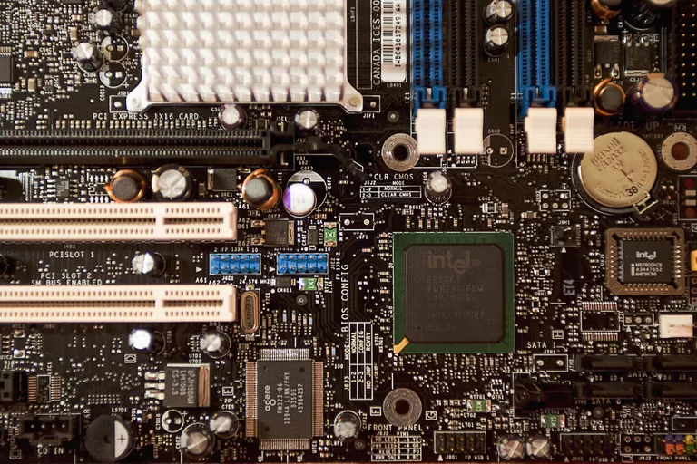
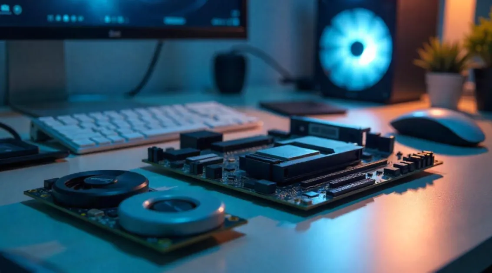
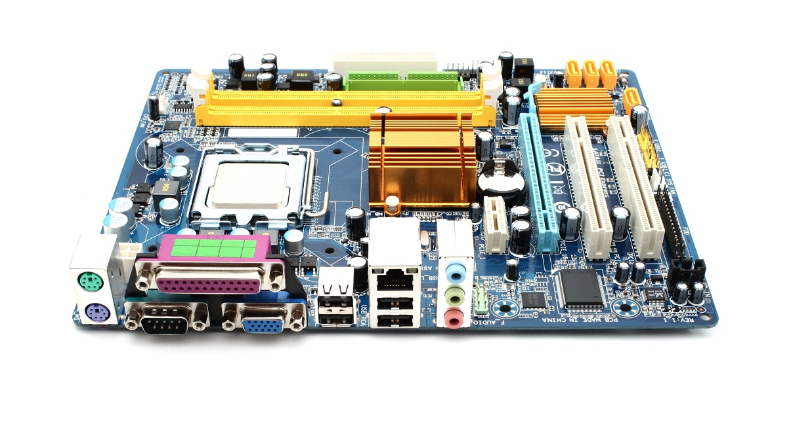
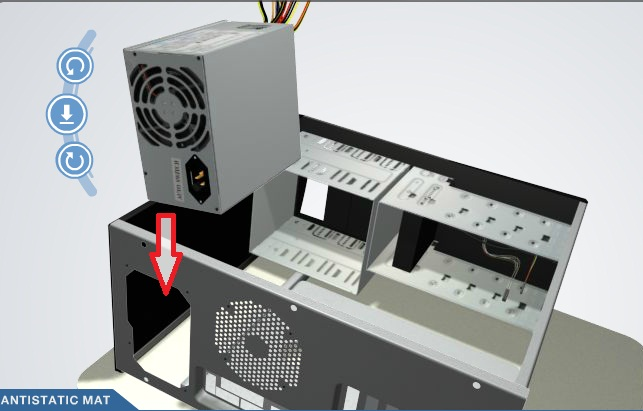

Seleccionar componentes no consiste únicamente en comprar las piezas más potentes. Es necesario analizar compatibilidad, rendimiento, costo, consumo de energía, capacidad de expansión y el ambiente donde el equipo será utilizado.


El chipset es el conjunto de circuitos integrados de la tarjeta madre que permite la comunicación entre el procesador, la memoria RAM, el almacenamiento, las tarjetas de expansión y los dispositivos de entrada y salida.
Su importancia está en que define qué procesadores son compatibles, qué tipo de memoria se puede instalar, cuántos puertos o ranuras estarán disponibles y qué tecnologías podrá soportar el equipo.
Las aplicaciones se refieren al uso principal que tendrá el equipo de cómputo. No se requieren los mismos componentes para una computadora de oficina, diseño gráfico, programación, videojuegos, edición de video o uso industrial.
Definir la aplicación ayuda a seleccionar correctamente el procesador, la memoria RAM, la tarjeta gráfica, el almacenamiento, la fuente de poder y el sistema de enfriamiento.
El ambiente de servicio es el lugar y las condiciones donde el equipo funcionará. Incluye factores como temperatura, polvo, humedad, ventilación, disponibilidad eléctrica, espacio físico y tiempo de uso continuo.
Un equipo usado en una oficina, laboratorio, taller industrial o centro de datos puede requerir componentes distintos, mayor protección, mejor enfriamiento o mantenimiento más frecuente.

El chipset trabaja como un puente de comunicación entre los elementos principales del equipo. Aunque muchas funciones que antes estaban en el chipset ahora se integran dentro del procesador, este sigue siendo clave para determinar las capacidades generales de la motherboard.
Define qué CPU, RAM y dispositivos puede utilizar la tarjeta madre.
Coordina el intercambio de datos entre componentes internos y externos.
Determina ranuras, puertos, almacenamiento y conectividad disponible.
Influye en la velocidad, estabilidad y capacidad de actualización del equipo.
Para tareas como documentos, navegación, clases en línea, correo y videollamadas, se recomienda un equipo equilibrado, con procesador de gama básica o media, memoria suficiente y almacenamiento SSD.
Para edición de imágenes, video, modelado 3D o animación, se requiere mayor capacidad de procesamiento, más memoria RAM, una tarjeta gráfica adecuada y almacenamiento rápido.
En equipos para videojuegos se da prioridad a la tarjeta gráfica, el procesador, la memoria RAM, la ventilación y una fuente de poder confiable que soporte la demanda energética.
Para desarrollo de software se recomienda buena cantidad de RAM, almacenamiento SSD y un procesador capaz de ejecutar entornos de desarrollo, bases de datos o máquinas virtuales.
En ambientes industriales se valoran la resistencia, estabilidad, protección contra polvo o temperatura, conectividad especializada y capacidad de trabajar durante largos periodos.
Un servidor necesita disponibilidad, capacidad de almacenamiento, redundancia, buena refrigeración y componentes preparados para operar de forma continua y atender múltiples usuarios.
El calor excesivo reduce el rendimiento y puede dañar componentes. Por eso es importante considerar ventiladores, disipadores y flujo de aire.
El polvo puede obstruir ventiladores y elevar la temperatura. Un buen gabinete y mantenimiento ayudan a prolongar la vida útil del equipo.
Las variaciones de voltaje pueden causar fallas. Se recomienda una fuente de poder adecuada, regulador o sistema de respaldo según el caso.
Un equipo que trabaja muchas horas al día necesita componentes más confiables, mejor refrigeración y mantenimiento preventivo.
Para ensamblar un equipo de cómputo se debe partir de una necesidad concreta. A partir de ella, se eligen los componentes que ofrecen el rendimiento, compatibilidad y durabilidad adecuados.
El chipset permite conocer las capacidades de la tarjeta madre; las aplicaciones indican qué nivel de hardware se necesita; y los ambientes de servicio ayudan a decidir si se requiere mayor resistencia, ventilación, protección o respaldo eléctrico.

Informacion sobre el contenido visto en la materia
Carpeta raíz: pdfs
Formato: PDF
Acceso: descarga directa
© Angeline Jaretzi Rojas de la Rosa. Arquitectura de las computadoras.